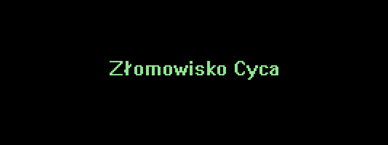

Zenith Z-Station EL
Komputer znaleziony na wystawce. Niegdyś działał i obecnie zresztą też jest na chodzie, lecz na ten moment wymaga skompletowania i modernizacji.
Konfiguracja
- Płyta główna - Intel NV430VX "Orlando"
- Chipset płyty - Intel 430VX
- Procesor - Intel Pentium 133
- RAM - 32 MB typu SIMM
- Karta graficzna - S3 Trio64V+ 1 MB (zintegrowane)
- Napęd CD-RW - Samsung SW-252F
- Stacja dyskietek 3,5"
- Zasilacz - ATX Astec 145W
Wystrugane przez CycuPL
© 2021